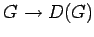

Inhalt Index DeskTop Bronstein

 Algebra und Diskrete Mathematik Klassische algebraische Strukturen Darstellung von Gruppen Definitionen
Algebra und Diskrete Mathematik Klassische algebraische Strukturen Darstellung von Gruppen Definitionen


Bei einer treuen Darstellung ist  ein Isomorphismus, d.h., die Zuordnung von Gruppenelement und Darstellungsmatrix ist eineindeutig.